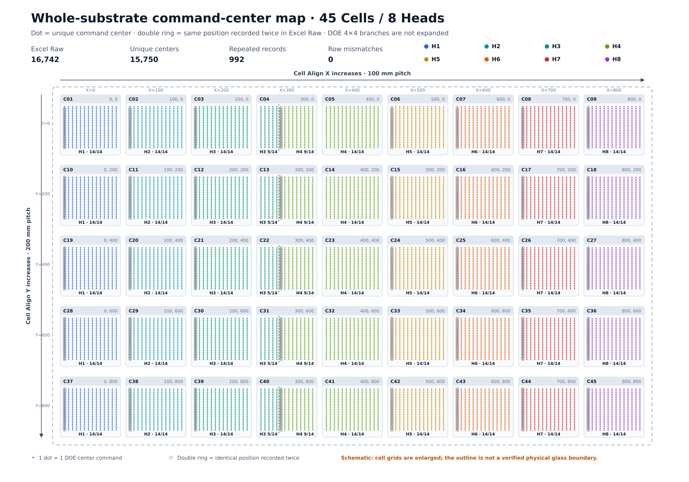

A3 LASER DRILLER · ROW-BY-ROW COORDINATE AUDIT
가공좌표 개수 재분석
16,742개 전수 1:1 대조
첨부 Excel의 8개 Head 좌표쌍을 한 행씩 추출하고, 레시피 기반 생성 모델로 같은 순서의 좌표를 다시 만든 뒤 GY/GX·순번·Lane 시작 반복까지 비교한 교정 보고서입니다.
1. 기판 전체 가공좌표 개요
45개 Cell의 14×25 명령 중심을 모두 표시했습니다. 점 색은 Head 소유권이며, 이중 원은 같은 공간점이 Excel Raw 좌표표에 연속 두 번 기록된 위치입니다. Cell 4·13·22·31·40에서는 H3가 5열, H4가 9열을 담당합니다.

2. 서로 다르게 보였던 개수의 정의
| 명칭 | 개수 | 정확한 의미 | 주의사항 |
|---|---|---|---|
| Worksheet 최대 데이터 행 | 2,999 | 가장 긴 H4의 G5:H3003 | 8개 Head가 가로 병렬이므로 전체 좌표 합계가 아님 |
| Excel Raw 좌표쌍 레코드 | 16,742 | Head 1~8의 실제 nonblank (GY,GX) 레코드 합계 | 파일에서 “좌표 개수”를 세면 기본적으로 이 값 |
| 고유 가공 중심 | 15,750 | (HeadId, GY, GX) 기준 정확 중복 제거 결과 | Raw보다 992개 적음 |
| 반복 발생분 | 992 | 같은 Head의 같은 좌표가 바로 다음 행에 한 번 더 기록 | 별도 위치가 아니라 동일 위치의 두 번째 레코드 |
| 명목 DOE Hole 발생수 | 252,000 / 267,872 | 15,750×16 또는 16,742×16 | Branch 절대좌표가 없어 “고유 Hole 좌표”로 검증된 값은 아님 |
3. Head별 좌표를 하나씩 센 결과
| Head | Excel 열·실데이터 행 | Raw | 고유 | 반복 | 첫 좌표 → 마지막 좌표 (GY, GX) |
|---|---|---|---|---|---|
| H1 | A:B · 5:1878 | 1,874 | 1,750 | 124 | (−29.1625, −500.3375) → (−17.4625, −1321.9375) |
| H2 | C:D · 5:1878 | 1,874 | 1,750 | 124 | (−39.1625, −120.3375) → (−27.4625, −941.9375) |
| H3 | E:F · 5:2503 | 2,499 | 2,375 | 124 | (−49.1625, −500.3375) → (54.4375, −1321.9375) |
| H4 | G:H · 5:3003 | 2,999 | 2,875 | 124 | (−54.6625, −120.3375) → (52.5375, −941.9375) |
| H5 | I:J · 5:1878 | 1,874 | 1,750 | 124 | (30.8375, −500.3375) → (42.5375, −1321.9375) |
| H6 | K:L · 5:1878 | 1,874 | 1,750 | 124 | (20.8375, −120.3375) → (32.5375, −941.9375) |
| H7 | M:N · 5:1878 | 1,874 | 1,750 | 124 | (10.8375, −500.3375) → (22.5375, −1321.9375) |
| H8 | O:P · 5:1878 | 1,874 | 1,750 | 124 | (0.8375, −120.3375) → (12.5375, −941.9375) |
| 합계 | 8개 Head | 16,742 | 15,750 | 992 | 불완전 좌표쌍 0 |
H3와 H4가 많은 이유는 Cell X=300인 5개 Cell이 Head 경계에서 분할되기 때문입니다.
각 분할 Cell에서 H3가 ix=0…4의 125개, H4가 ix=5…13의 225개 중심을 담당합니다.
4. Recipe 기반 재생성과 전행 대조 방법
4.1 Pitch와 Cell당 중심
Pitch는 현재 명령 중심에서 다음 명령 중심까지의 Pixel 개수이며 DOE 4×4 내부 Branch 간격과 무관합니다.
현재 Excel은 floor(144/10)=14, floor(256/10)=25 정책을 사용합니다.
4.2 좌표식
4.3 Excel의 실제 Queue 순서
- Cell Y row: 0 → 200 → 400 → 600 → 800
- 각 Cell row의
iy: 0 → 24 - 각 Head가 소유한 Cell X와
ix를 작은 값부터 기록 - 전체 첫 Lane을 제외한 각 Lane 시작 좌표를 한 번 더 삽입
−29.162500000000001 같은 이진 부동소수 문자열이 있으므로 문자열 비교는 부적절합니다.
본 검증은 표시 정밀도 4자리로 정규화하고 수치 차이 ≤1×10⁻⁹ mm를 일치로 판정했습니다.
5. 992개 반복 레코드의 정확한 위치
각 Head에는 5 Cell row × 25 iy = 125 Lane이 있습니다.
첫 Lane을 제외한 124개 Lane에서 첫 좌표가 바로 다음 행에 한 번 더 기록되어
124 × 8 = 992가 됩니다.
| Head | 첫 반복 | 마지막 반복 | Lane 시작 위치 |
|---|---|---|---|
| H1 | A19:B19 = A20:B20 | A1864:B1864 = A1865:B1865 | Cell열 1 · ix=0 |
| H2 | C19:D19 = C20:D20 | C1864:D1864 = C1865:D1865 | Cell열 2 · ix=0 |
| H3 | E24:F24 = E25:F25 | E2484:F2484 = E2485:F2485 | Cell열 3 · ix=0 |
| H4 | G28:H28 = G29:H29 | G2980:H2980 = G2981:H2981 | 분할 Cell열 4 · ix=5 |
| H5 | I19:J19 = I20:J20 | I1864:J1864 = I1865:J1865 | Cell열 6 · ix=0 |
| H6 | K19:L19 = K20:L20 | K1864:L1864 = K1865:L1865 | Cell열 7 · ix=0 |
| H7 | M19:N19 = M20:N20 | M1864:N1864 = M1865:N1865 | Cell열 8 · ix=0 |
| H8 | O19:P19 = O20:P20 | O1864:P1864 = O1865:P1865 | Cell열 9 · ix=0 |
예: H1의 두 연속 행
ΔGY=0, ΔGX=0으로 완전히 동일합니다.
중복이 아닌 경우
0.9 mm 변화는 PixelSize×Pitch와 정확히 일치합니다.
6. 기존 보고서에서 바로잡은 표현
| 기존 표현 | 교정 표현 | 이유 |
|---|---|---|
| “가공좌표 15,750개” | Excel Raw 16,742개 / 고유 중심 15,750개 | 일반적인 좌표 개수와 dedup 결과를 혼용 |
| “15,750개를 100% 재현” | 16,742개 Raw를 순서 포함 100% 재현 | 기존 보고서에는 전행·순서 비교 증빙이 없었음 |
| “Raw 행” | Head별 Raw 좌표쌍 레코드 | 물리 Worksheet 행 2,999개와 혼동 방지 |
| “DOE 고유 Hole 252,000” | 고유 중심 기준 명목 Hole 발생수 252,000 | Branch 절대좌표가 없어 Hole 좌표 고유성은 미검증 |
| 레시피 선언 범위 A1:O92 | XML dimension B1:O92 | 저수준 XML 확인 결과 |
7. 실제 가공 횟수는 파일만으로 확정할 수 없음
992개가 이동·Lead-in이고 Laser-Off라면
실제 가공 중심 후보: 15,750개
DOE 16분기 명목 발생수: 252,000
Excel Raw의 모든 행이 Laser-On이라면
가공 명령: 16,742개
DOE 16분기 명목 발생수: 267,872
LaserGate, CommandType, Jump/Mark가 없고 좌표 셀의 스타일도 동일합니다.
따라서 992개를 자동 삭제해서도, 실제 이중 가공이라고 단정해서도 안 됩니다.
좌표 생성 SW에는 최소한 LaneId, PointRole, LaserGate를 추가해야 합니다.
추가 사양 확인: 마지막 Pixel 포함 정책
현재 Excel은 14×25 중심을 사용하지만, 유효 인덱스가 PixelNum보다 작으면 포함하는 정책은 15×26이 됩니다.
후자의 경우 45×15×26=17,550으로 현재 고유 중심보다 1,800개 많습니다.
이 차이는 이번 992개 반복 문제와 별개의 끝점 정책입니다.
8. 16,742행 전체 비교 증빙
아래 CSV에는 모든 좌표 레코드에 대해 Head, Queue 순번, Excel 행, 실제 GY/GX, 예상 GY/GX, ΔGY/ΔGX, MATCH 판정, 연속 반복 여부, CellId, ix/iy, LaneNo를 기록했습니다.
전체 전수대조 CSV 열기원본·보고서 식별값
| 대상 | SHA-256 |
|---|---|
| 첨부 Excel | 6bd2b8a0a67d402f507913765ff3b5c48d16c14554ab9d178d2e4b5f69d1ad70 |
| 기존 HTML 분석보고서 | 818c8de942b8c6e3f0dd808e5cfb6c81b6d0d0bb4a0e88d1968e5b5ba1b5df20 |